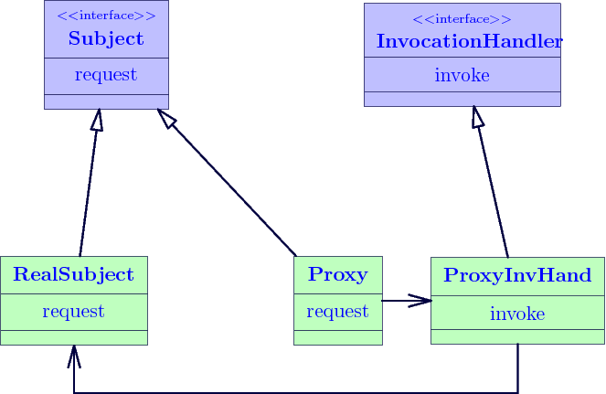

设计模式-代理模式
代理是一种常用的设计模式，其目的就是为其他对象提供一个代理以控制对某个对象的访问。代理类负责为委托类预处理消息，过滤消息并转发消息，以及进行消息被委托类执行后的后续处理。
其UML图为

静态代理
按照代理模式的定义，我们实现一个代理模式，其代码为
//抽象角色
public abstract class Subject {
public abstract void doSomething();
}
//真实角色
public class RealSubject extends Subject {
public void doSomething(){
System.out.println("real do something");
}
}
//代理角色
public class ProxySubject extends Subject {
private RealSubject realSub;
public ProxySubject(RealSubject realSub){
this.realSub = realSub;
}
private void preDoSomething(){
System.out.println("pre do something");
}
public void doSomething(){
preDoSomething();
realSub.doSomething();
afterDoSomething();
}
public void afterDoSomething(){
System.out.println("after do something");
}
}
代理角色类ProxySubject 是真实角色RealSubject 的实际应用体现，它扩充了实际角色中的doSomething方法，对其进行了环绕增强；
实际中，我们这么使用：
public static void main(String[] args){
ProxySubject sub = new ProxySubject(new RealSubject());
sub.doSomething();
}
输出：
pre do something real do something after do something
可以看出，代理对真实角色进行了增强，实际的输出是由代理来实现的。静态代理的代理角色与实际角色共同继承同一个接口或者父类，代理的方法只能是接口或者父类中的方法；
如上所示的代码，可以称之为静态代理，静态代理实现简单，清晰明了，但是如果对多个真实角色进行代理操作，那么就需要编写不同的实现代理类，增大了重复代码；
JDK提供的动态代理
为了解决静态代理实现中的重复代码问题，JDK为我们提供了一种动态代理的实现方法。动态代理（Dynamic Proxy）在运行的时候产生class，在生成的时候必须为它提供一个接口，然后创建的class就是该接口的一个实现。
JDK动态代理的UML图

java的动态代理类位于java.lang.reflect包下，主要涉及以下两个类：
1). Interface InvocationHandler 该接口中仅定义了一个方法 public Object invoke(Object proxy, Method method, Object[] args) throws Throwable;
2). Proxy 该类为动态代理类，作用类似于静态代理中的ProxySubject
3). Static Object newProxyInstance(ClassLoader loader, Class[] interfaces, InvocationHandler h)；该方法返回代理类的一个实例，返回后的代理类可以当做实际角色使用。
动态代理的实现，必须要实现InvocationHandler接口，然后创建一个动态代理类，执行代理方法；
//代理接口
public interface InSubject {
public void doSomething();
}
//实现角色
public class RealInSubject implements InSubject {
public void doSomething(){
System.out.println("interface subject do something");
}
}
//InvocationHandler实现类，代理角色
public class DynamicSubject implements InvocationHandler{
private Object subject;
public DynamicSubject(){
}
public DynamicSubject(Object subject){
this.subject = subject;
}
public Object invoke(Object proxy, Method method, Object[] args) throws Exception{
preDoSomething();
method.invoke(subject, args);
afterDoSomething();
return null;
}
private void preDoSomething(){
System.out.println("Dynamic proxy do something pre");
}
private void afterDoSomething(){
System.out.println("Dynamic proxy do something after");
}
}
该代理类的内部属性为Object类，实际使用时通过该类的构造函数DynamicSubject(Object obj)对其赋值；此外，在该类还实现了invoke方法，该方法中的 method.invoke(sub,args); 其实就是调用被代理对象的将要被执行的方法，方法参数sub是实际的被代理对象，args为执行被代理对象相应操作所需的参数。通过动态代理类，我们可以在调用之前或之后执行一些相关操作。
使用代理
public static void main(String[] args){
RealInSubject subject = new RealInSubject();
InvocationHandler ds = new DynamicSubject(subject); //创建一个InvocationHandler实例
Class cls = subject.getClass();
InSubject sub = (InSubject) Proxy.newProxyInstance(cls.getClassLoader(), cls.getInterfaces(), ds); //获取代理类
sub.doSomething();
}
输出：
Dynamic proxy do something pre interface subject do something Dynamic proxy do something after
通过这种方式，被代理的对象(RealSubject)可以在运行时动态改变，需要控制的接口 (InSubject接口)可以在运行时改变，控制的方式(DynamicSubject类)也可以动态改变，从而实现了非常灵活的动态代理关系。
JDK的动态代理有一个不足就是其只能实现接口实现类的代理，如果一个类没有接口，那么该动态代理就没法使用；
CGLitb动态代理
JDK的动态代理机制只能代理实现了接口的类，而不能实现接口的类就不能实现JDK的动态代理，cglib是针对类来实现代理的，他的原理是对指定的目标类生成一个子类，并覆盖其中方法实现增强，但因为采用的是继承，所以不能对final修饰的类进行代理。
CGLIB内部使用到ASM，所以我们下面的例子需要引入asm.jar、cglib.jar
CGLib代理需要实现接口MethodInterceptor，该接口只包含一个方法Object intercept(Object var1, Method var2, Object[] var3, MethodProxy var4) throws Throwable;
public class CgDynamicProxy implements MethodInterceptor {
private Object target;
public CgDynamicProxy(Object target){
this.target = target;
}
public Object getInstance(){ //获取代理角色的实例
this.target = target;
Enhancer enhancer = new Enhancer();
enhancer.setSuperclass(this.target.getClass());
enhancer.setCallback(this);
return enhancer.create();
}
private void preSomething(){
System.out.println("cglib pre do something");
}
private void afterSomething(){
System.out.println("cglib after do something");
}
public Object intercept(Object obj, Method method, Object[] args,
MethodProxy proxy) throws Throwable{ //代理实现
preSomething();
proxy.invokeSuper(obj, args);
afterSomething();
return null;
}
}
使用:
public static void main(String[] args){
Subject sub = new RealSubject();
CgDynamicProxy proxy = new CgDynamicProxy(sub);
Subject subProxy =(RealSubject) proxy.getInstance();
subProxy.doSomething();
}
输出：
cglib pre do something real do something cglib after do something
总结：
对于前置增强，后置增强，环绕增强而言，最好的实现方式便是代理，本文减少了代理模式的三种实现方式，在实际使用中，最好使用JDK动态代理，只有未继承任何接口的类的代理，使用CGLib动态代理。